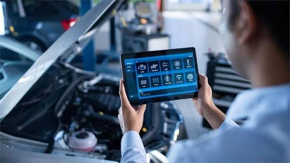
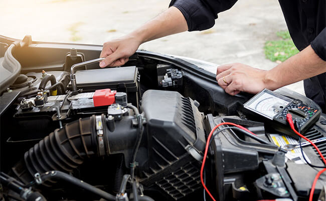
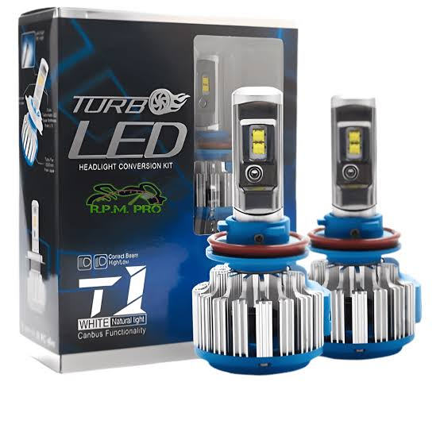
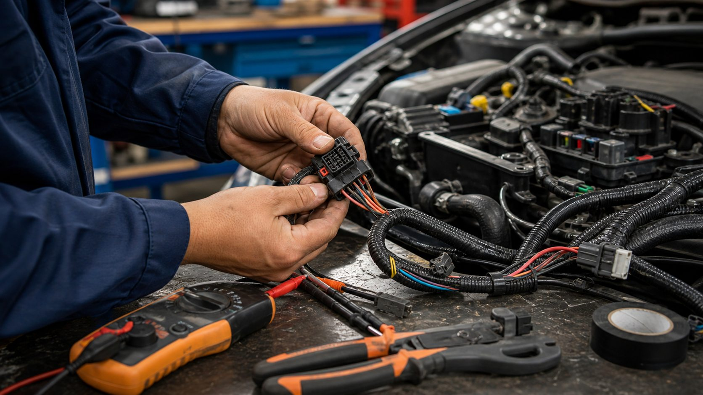
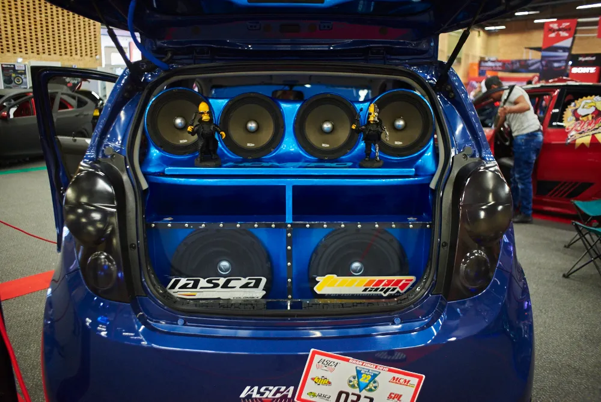

Identificamos fallas eléctricas y electrónicas para encontrar soluciones adecuadas para tu vehículo.
SOLICITAR SERVICIO →
Revisión, mantenimiento y reparación de alternadores para garantizar una correcta carga de batería.
SOLICITAR SERVICIO →Diagnóstico y reparación del sistema de arranque para que tu vehículo encienda correctamente.
SOLICITAR SERVICIO →
Revisión e instalación de luces, faros, exploradoras y sistemas de iluminación.
SOLICITAR SERVICIO →
Revisión, reparación e instalación de conexiones, cables y circuitos eléctricos.
SOLICITAR SERVICIO →Mantenimiento y revisión de componentes eléctricos, conexiones y sistemas electrónicos del vehículo.
SOLICITAR SERVICIO →
Instalación y conexión de radios, parlantes, amplificadores, bajos y sistemas de sonido para vehículos.
SOLICITAR SERVICIO →